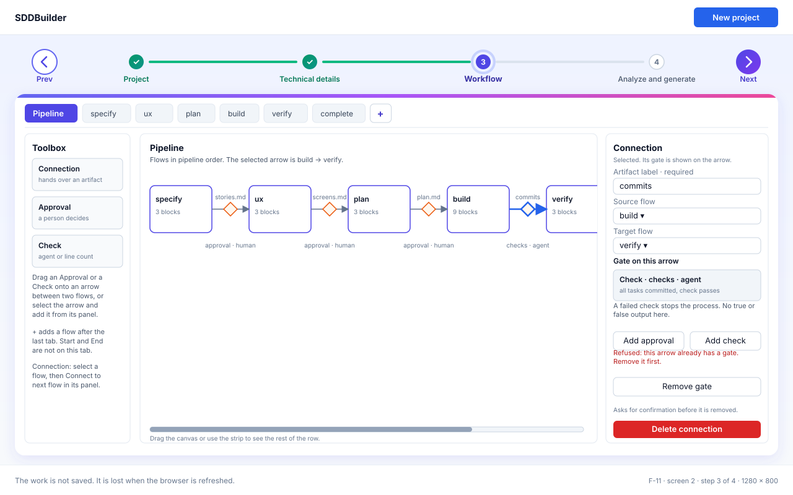
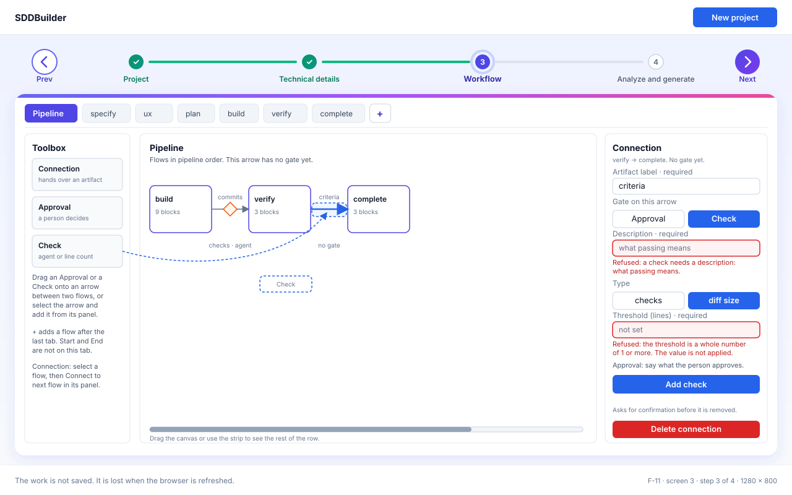
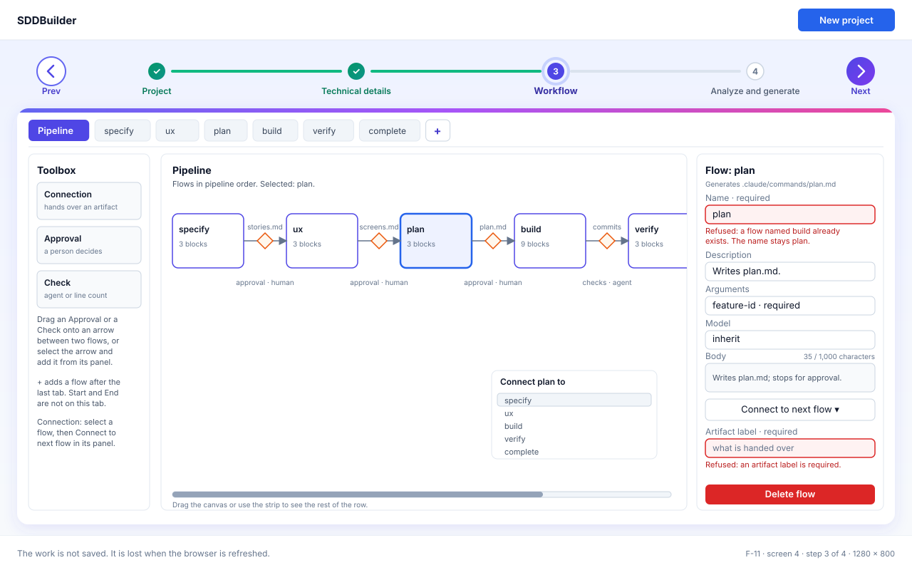
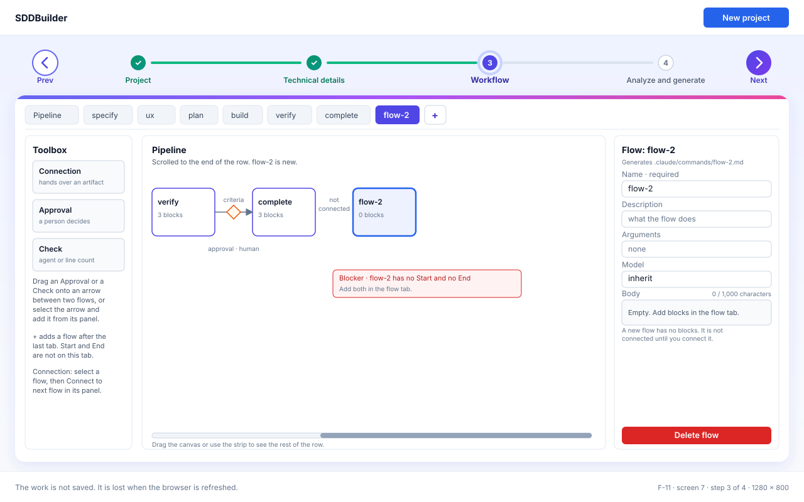
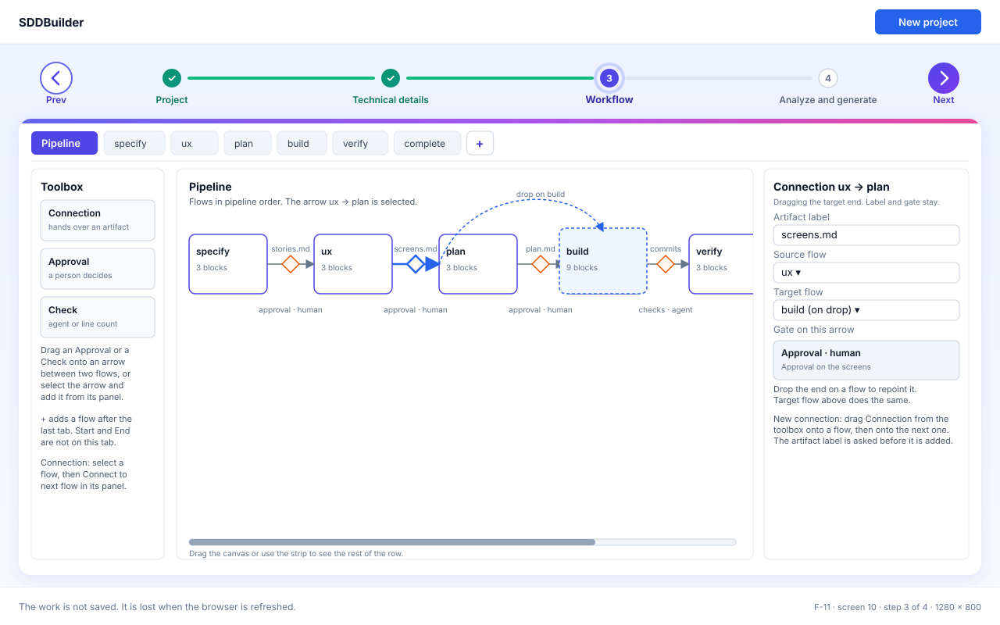

01 The Pipeline tab with the default pipeline
Six flows in order, five gates on the arrows, the toolbox and the pipeline's properties. The row runs past the canvas edge; the strip under it shows the rest.

Step 3 of the wizard. The Pipeline tab is the first tab; one tab per flow follows, and + adds a flow. Flows are boxes on the canvas, connections are arrows, and approvals and checks sit on the arrows. Wireframes only; read screens.md for the legend, the states, the coverage and the open points.
Six flows in order, five gates on the arrows, the toolbox and the pipeline's properties. The row runs past the canvas edge; the strip under it shows the rest.
The arrow build → verify with its check gate. A second gate is refused, and Remove gate and Delete connection are on the panel.

The arrow verify → complete has no gate. A Check is dragged onto it, and the gate form refuses an empty description and a zero threshold.

The flow plan: a name that is already used is refused, the flow's properties, Connect to next flow with its picker, and a required artifact label. Delete is the only footer action.

The confirmation names the flow's connections and their gates. The whole screen is dimmed behind it.

A blocker beside a flow with no End, a loop among connections, and the Not on a drawn item section. Marks never block an edit.

flow-2 is added, selected, empty and not connected. Its panel shows the name, the generated file and Delete; the mark says it has no Start and no End.

The verify tab. Its body is a placeholder until F-12 builds the blocks.

A repeated argument name and a body of 1,001 characters are refused; the previous values are kept.

The target end of ux → plan is dragged onto build. The label and the gate stay with the arrow.

Every flow is deleted. The canvas is empty and the blocker says the pipeline has no flow; no edit is blocked.